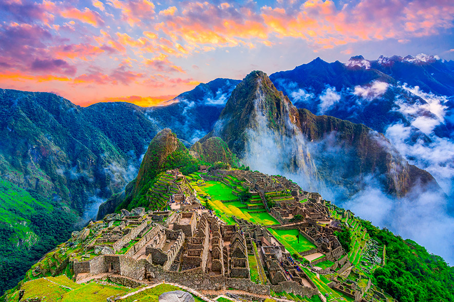

¿Que destino elige hoy?
Arequipa
Plaza de Armas de Arequipa

Arequipa
La plaza de Armas se ubica en el Centro Histórico de Arequipa, y a sus alrededores se encuentran La Catedral de Arequipa, los famosos Portales de Arequipa y, exactamente en el centro de la plaza, se halla un pileta de bronce que lleva la escultura de un duendecillo portando una trompeta.
Cusco
Machu Picchu
Cusco
Machu Picchu es el sitio arqueológico inca más sobresaliente debido a su creativo diseño urbano, la belleza de su arquitectura y el fino trabajo en piedra de sus construcciones. En su planificación se aprovechó notablemente la topografía de la cima de la montaña a la que transformó en una imponente llaqta.
Lima
Malecón de Miraflores

Lima
Se encuentra cerca del acantilado en Miraflores y con una vista a la bahía de Lima, denominada Costa Verde. En él se realizan actividades deportivas como parapente y ciclismo o actividades de esparcimiento.1 A lo largo del malecón cuenta con restaurantes y el centro comercial Larcomar.
Ica
Oasis de la Huacachina

Ica
Entre los innumerables atractivos turísticos que ofrece el Perú, sobresale uno por su encanto natural y belleza paisajística. La Laguna de Huacachina, a solo 20 minutos de la ciudad de Ica, es un lugar ideal para desconectarse de la rutina, darse un descanso y, por qué no, practicar algunos deportes de aventura